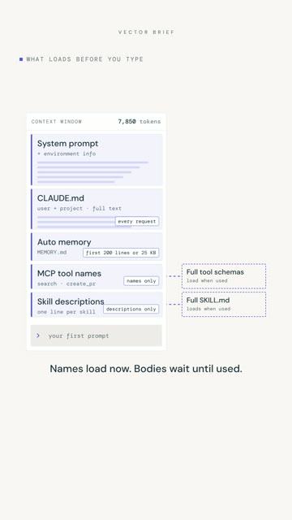

WatchCLAUDE.md, auto memory, MCP tool names and skill descriptions load before you type. Check /context.
Before you blame the model, check what is already in context:
checklist
Before you blame the model, check what's already in context:
1. Run /context for a live breakdown by category, including which CLAUDE.md and memory files loaded.
2. Keep each CLAUDE.md under 200 lines.
3. Move reference material into skills. Only descriptions load at start; full content loads when used.
4. Auto memory loads the first 200 lines or 25 KB of MEMORY.md, whichever comes first. Keep it an index.
5. For skills you only run yourself, set disable-model-invocation: true so the description stays out of context.Keep a skill you only run yourself out of context:
.claude/skills/deploy/SKILL.md
---
name: deploy
description: Deploy the app to production
disable-model-invocation: true
---Fine print
- Only your user and project CLAUDE.md load at session start. CLAUDE.md files in subfolders load when Claude works there.
- MCP tool names and server instructions load at start; full tool schemas stay deferred until a tool is used.
- The 7,850-token figure in the video is the docs’ illustrative example session. Your numbers depend on your setup.
Checked against the official docs on 2026-11-22: Context window · Memory · Features overview